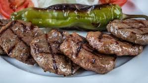
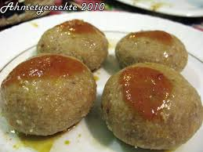
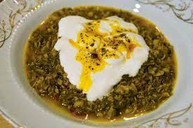
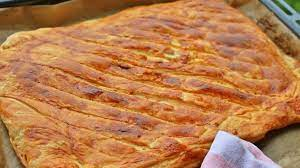
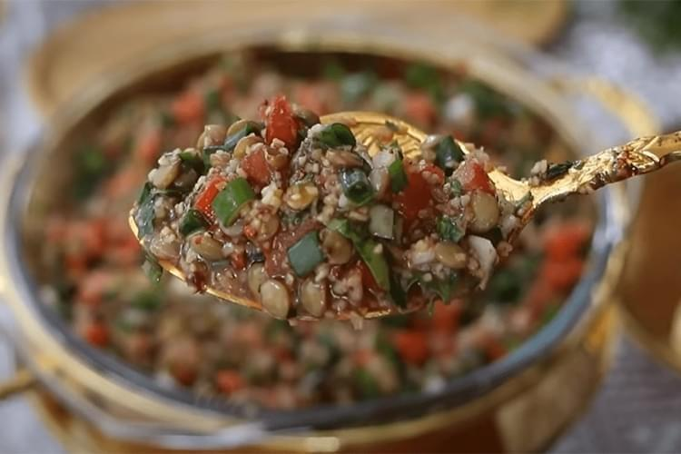
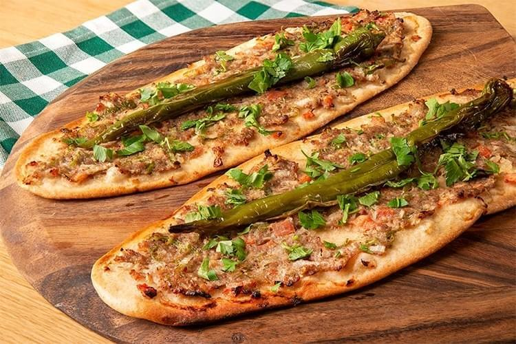
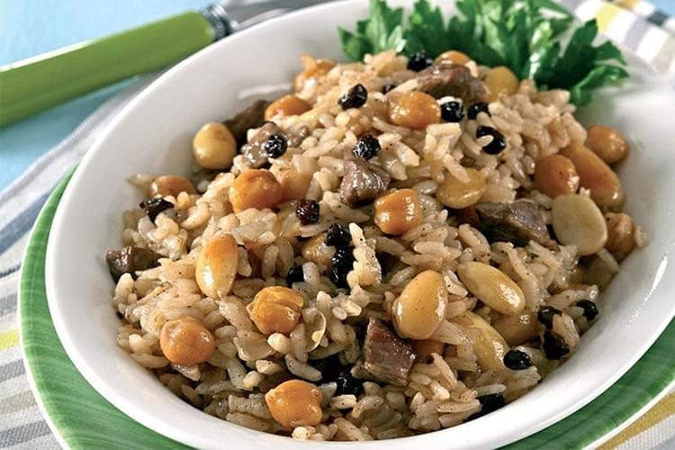
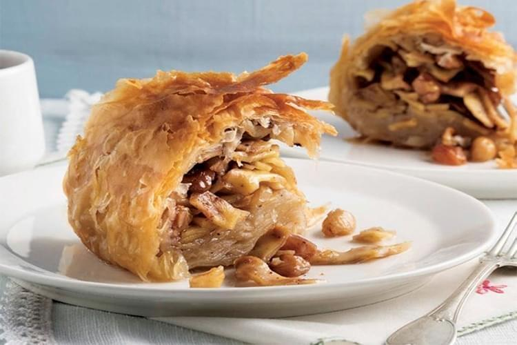
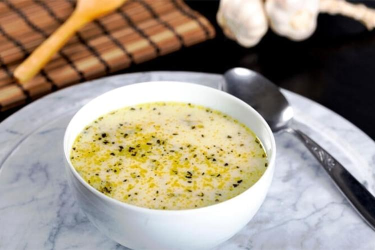

Şehre Özgü Yiyecekler
Sivas Köfte
“İlk önce etimizi kasaptan düve eti olarak seçiyoruz. Etimizi ayıklayıp, yağını temizledikten sonra tuz atıp, kıyma makinesinde çekiyoruz. Çektiğimiz eti yoğurarak 1’er kiloluk topaklar haline getiriyoruz. Topaklar haline gelen etimizi en az 1 gün dinlendiriyoruz. İkinci aşama olarak da tekrar çekip, tıpışlayarak yapıyoruz. Tıpışlamanın ardından ise köfte haline geliyor.“Baharat olarak hiçbir katkı maddesi kullanmıyoruz, sadece tuz kullanıyoruz. Tuz oranında etin kilosuna göre belirli oranda kullanılıyor. Kiloya 20 gram tuz kullanıyoruz.
Mantı

Her yörede farklı şekillerde yapılan mantıya Sivas'ta hıngel denir. Hamuru büyük taneli olarak kesilen hıngel ister patatesli isterseniz de kıymalı harç ile yap
İçli Köfte
Aslen Levant mutfağına ait olan bu yemeğe kibbe ve bazı yörelerde dolgulu köfte de deniliyor. İçli köfte, iki türlü hazırlanır. Bunlardan birincisi haşlama usulüdür. Bayram, söz, nişan, kına gecesi gibi özel günler ile misafir ağırlamada mutlaka sofradaki yerini alır. İkincisi ise kızartmadır. Türkiye'nin belli bölgelerinin geleneksel yemekleri arasında olan içli köfte, yapımı zor ve uzun olduğu için gündelik yemek olmaktan çıkıp özel gün yemeği sınıfına girmiştir. İç harcı kıyma, soğan ve isteğe göre ceviz, maydanoz, biber salçası ve baharatlardan oluşuyor. Tereyağı veya kuyruk yağı içinde kavruluyor. Sonra hazırlanmış iç harcı dolapta soğuyana kadar dinleniyor. İnce köftelik bulgur, irmik, un, yumurta, biber salçası, baharatlar ve tuz karışımından hamur hazırlanıyor, ancak haşlanmış içli köfte yapımında ise irmik yerine yarma da kullanılıyor. Soğuk iç harcı kuru köfte şeklinde hazırlanır ve hamur doldurulur.
Madımak
Aslen Levant mutfağına ait olan bu yemeğe kibbe ve bazı yörelerde dolgulu köfte de deniliyor. İçli köfte, iki türlü hazırlanır. Bunlardan birincisi haşlama usulüdür. Bayram, söz, nişan, kına gecesi gibi özel günler ile misafir ağırlamada mutlaka sofradaki yerini alır. İkincisi ise kızartmadır. Türkiye'nin belli bölgelerinin geleneksel yemekleri arasında olan içli köfte, yapımı zor ve uzun olduğu için gündelik yemek olmaktan çıkıp özel gün yemeği sınıfına girmiştir. İç harcı kıyma, soğan ve isteğe göre ceviz, maydanoz, biber salçası ve baharatlardan oluşuyor. Tereyağı veya kuyruk yağı içinde kavruluyor. Sonra hazırlanmış iç harcı dolapta soğuyana kadar dinleniyor. İnce köftelik bulgur, irmik, un, yumurta, biber salçası, baharatlar ve tuz karışımından hamur hazırlanıyor, ancak haşlanmış içli köfte yapımında ise irmik yerine yarma da kullanılıyor. Soğuk iç harcı kuru köfte şeklinde hazırlanır ve hamur doldurulur.
Katmer

Katmer, Türk mutfağında ve Orta Asya'da yaygın olarak yapılan, hamurun yaklaşık 2 mm kalınlığında açılıp arasına yağ, haşhaş, tahin ya da antep fıstığı konulup 4-5 kez katlanarak saçta pişirilmesi ile elde edilen hamur işi yiyecektir.
Mercimek Badı

Asma yaprakları ile servis edilen, mercimek, bulgur ve domates malzemelerinin bolca katılarak hazırlanan mercimek badı, Sivas’ın eşsiz lezzetleri arasında yer almaktadır. Sivaslıların bu yemeği, misafirlerinin önüne sunmayı en çok tercih ettiği yöresel tariflerdendir.
Etli Ekmek

Sadece Konya yöresinin değil, Sivas şehrinin de meşhur etli ekmeği vardır. Sivas bölgesinde hamurların biraz daha ince hazırlanması fark yaratır. Kıymalı pideye benzeyen, biraz yağlı olan ve içinde soğan bulunan Sivas yöresine ait bu lezzetli etli ekmek, misafirlerin tatmak istedikleri lezzetler arasında yer alır.
Divriği Pilavı

Sivas’ın özel lezzetlerinden biri olan Divriği pilavı içine fıstık, mısır, üzüm, badem, nohut gibi malzemeler ve üstüne tereyağı dökülerek hazırlanır.
Divriği pilavı malzemesi bol, lezzetli ve doyurucu bir pilav olarak bilinir. Bu pilav genellikle kırmızı et ile tercih edilse de farklı tercih olarak tavuk etiyle de hazırlanabilmektedir. Divriği pilavını yemek isteyenler için Divriği yöresinde bulunan Konak Restoran tercih edilebilir.
Kelle Tatlısı

Sivas bölgesine ait rengi nar gibi olan kelle tatlısı, tatlıyı ilk defa görenler için baklavayı andırır. Kelle tatlısı, içi kadayıfa benzeyen lezzetli bir tatlıdır. Kelle tatlısının içinde fıstık, badem, kuru üzüm ve ceviz gibi kuruyemişler vardır.
Pestukan Çorbası

Sivas bölgesine ait rengi nar gibi olan kelle tatlısı, tatlıyı ilk defa görenler için baklavayı andırır. Kelle tatlısı, içi kadayıfa benzeyen lezzetli bir tatlıdır. Kelle tatlısının içinde fıstık, badem, kuru üzüm ve ceviz gibi kuruyemişler vardır.